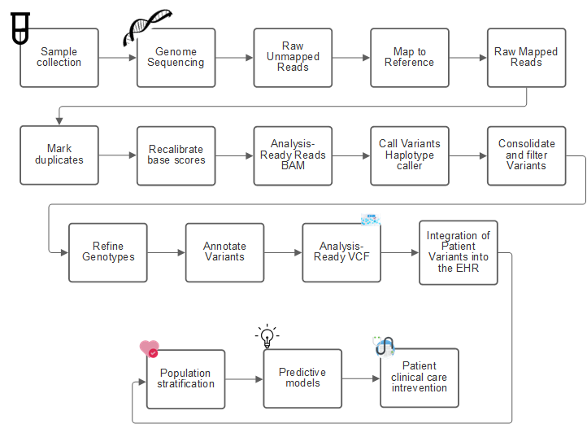
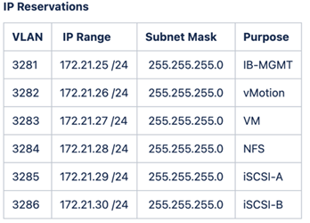
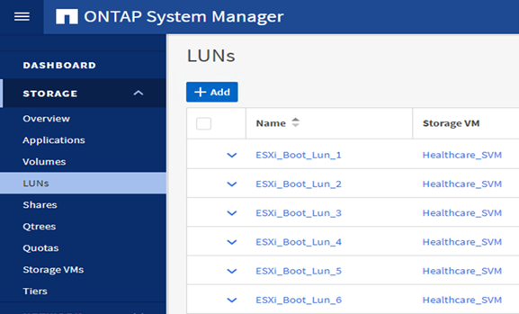
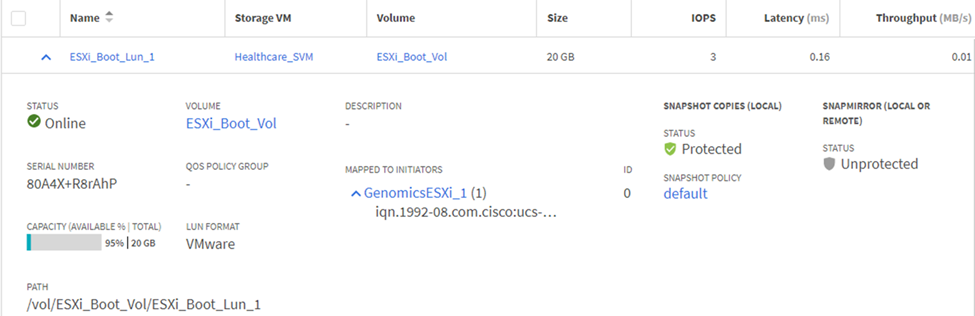
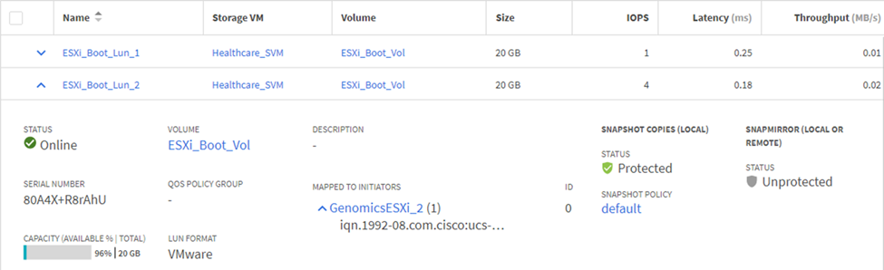
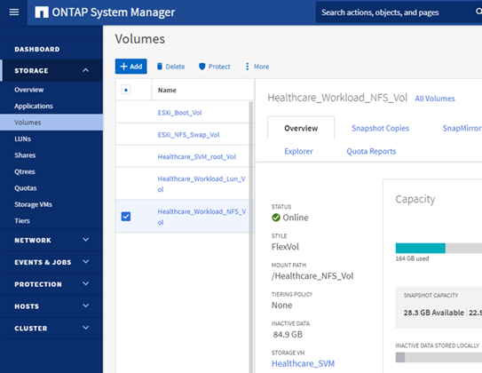
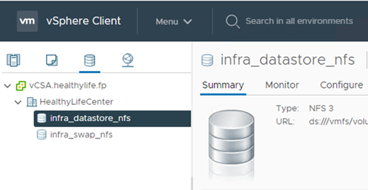

请求文档变更
请求文档变更 在 GitHub 上编辑
在 GitHub 上编辑 提供者指南
提供者指南基因组学— GATK 设置和执行
提供者
根据国家人类基因组研究所（ "NHGRI"）， " 基因组学是对一个人的所有基因（基因组）的研究，包括这些基因相互作用以及与人的环境相互作用。"
根据 "NHGRI"" 去氧碳核克利酸（ Deoxyribonucleic acid ， DNA/ 脱氧核素）是一种化合物，其中包含开发和指导几乎所有生物体活动所需的说明。DNA 分子由两个绞合成对的线组成，通常称为双螺旋。 " " 一个生物体的一整套基因称为其基因组。 "
测序是指确定基准在一个 DNA 链中的确切顺序的过程。当今最常见的排序类型之一称为 " 按合成排序 " 。此技术使用荧光信号的辐射来对基准进行排序。研究人员可以使用基因排序来搜索遗传变体以及在某个人仍处于萌芽阶段时可能对疾病的发展或发展起作用的任何变体。
从样本到变体标识，标注和预测
从较高的层面来看，基因组学可以分为以下几个步骤。以下列表并不详尽：
下图显示了从采样到变体标识，标注和预测的过程。

人类基因组项目于 2003 年 4 月完成，该项目对公有域中的人类基因组序列进行了高质量的模拟。这种参考基因组引发了基因组功能研究和开发的爆炸式增长。几乎每一种人类疾病都有其基因特征。直到最近，医生一直在利用基因预测和确定诸如镰状细胞性贫血之类的缺陷，这是由一个基因的变化所导致的某种继承模式引起的。人类基因组项目所提供的数据的宝贵财富导致了基因组功能的当前状态的出现。
基因组学具有一系列广泛的优势。以下是医疗保健和生命科学领域的一小部分优势：
-
更好地在护理点进行诊断
-
预后更好
-
精确医学
-
个性化的治疗计划
-
改善疾病监控
-
减少不利事件
-
改善获得治疗的途径
-
改进了疾病监控
-
有效地参与临床试验，并根据基因型更好地选择患者进行临床试验。
基因组学是一种 "四向 Beast ，" 因为数据集的整个生命周期都有计算需求：采集，存储，分布和分析。
基因组分析工具包（ GATK ）
GATK 是作为中的数据科学平台而开发的 "Broad Institute"。GATK 是一组开源工具，可用于进行基因组分析，尤其是变体发现，标识，标注和基因分型。GATK 的一个优势是，可以将一组工具和 / 或命令链接在一起，形成一个完整的工作流。广义学院要应对的主要挑战如下：
-
了解疾病的根本原因和生物机制。
-
确定可用于基本发生原因 of a disease 的治疗干预措施。
-
了解从各种变体到在人类物理中发挥作用的视觉特征。
-
制定标准和策略 "框架" 用于基因组数据表示，存储，分析，安全性等。
-
实现可互操作的基因组聚合数据库（ gnomAD ）的标准化和社交化。
-
基于基因组的患者监控，诊断和治疗更加精确。
-
帮助实施能够在症状出现之前很好地预测疾病的工具。
-
创建一个跨学科合作伙伴社区并赋予其能力，帮助解决生物医学领域最棘手，最重要的问题。
GATK 和 Broad Institute 表示，基因组测序应视为病理学实验室的一种协议；每个任务都经过了详细记录，优化，可重现，并在样本和实验中保持一致。下面是 Broad Institute 建议的一组步骤，有关详细信息，请参见 "GATK 网站"。
FlexPod 设置
基因组工作负载验证包括从头开始设置 FlexPod 基础架构平台。FlexPod 平台具有高可用性，可以独立扩展；例如，可以独立扩展网络，存储和计算。我们使用以下经过 Cisco 验证的设计指南作为参考架构文档来设置 FlexPod 环境： "采用 VMware vSphere 7.0 和 NetApp ONTAP 9.7 的 FlexPod Datacenter"。请参见以下 FlexPod 平台设置亮点：
要执行 FlexPod 实验室设置，请完成以下步骤：
-
FlexPod 实验室设置和验证使用以下 IP4 预留和 VLAN 。

-
在 ONTAP SVM 上配置基于 iSCSI 的启动 LUN 。

-
将 LUN 映射到 iSCSI 启动程序组。


-
使用 iSCSI 启动安装 vSphere 7.0 。
-
向 vCenter 注册 ESXi 主机。

-
在 ONTAP 存储上配置 NFS 数据存储库
infra_datastore_nfs。
-
将数据存储库添加到 vCenter 。

-
使用 vCenter 向 ESXi 主机添加 NFS 数据存储库。

-
使用 vCenter 创建 Red Hat Enterprise Linux （ RHEL ） 8.3 VM 以运行 GATK 。
-
NFS 数据存储库会提供给虚拟机并挂载在 ` /mnt/genomics` 中，用于存储 GATK 可执行文件，脚本，二进制对齐映射（ BAM ）文件，参考文件，索引文件，词典文件和输出文件，以用于变量调用。
GATK 设置和执行
在 RedHat Enterprise 8.3 Linux VM 上安装以下前提条件：
-
Java 8 或 SDK 1.8 或更高版本
-
从 Broad Institute 下载 GATK 4.2.0.0 "GitHub 站点"。基因组序列数据通常以一系列制表符分隔的 ASCII 列的形式存储。但是， ASCII 需要的存储空间太多。因此，一个新标准会逐渐演变为 BAM （ \* 。 bam ）文件。BAM 文件以压缩，索引和二进制形式存储序列数据。我们 "已下载" 一组公开可用的 BAM 文件，用于从执行 GATK "公有域"。我们还下载了索引文件（ \* 。 bai ），词典文件（ \* 。dict ）和引用数据文件（ * 。FASAA ）公有。
下载后， GATK 工具包将包含一个 JAR 文件和一组支持脚本。
-
gatk-package-4.2.0.0-local.jar可执行文件 -
gatk脚本文件。
我们下载了一个由父，母和子 * 。 bam 文件组成的系列的 BAM 文件以及相应的索引，词典和参考基因组文件。
克伦威尔引擎
Cromwell 是一款开源引擎，适用于支持工作流管理的科学工作流。可以将 Cromwell 引擎分为两种运行方式 "模式"，服务器模式或单工作流运行模式。可以使用控制 Cromwell 引擎的行为 "Cromwell 引擎配置文件"。
我们使用克伦威尔引擎大规模执行工作流和管道。Cromwell 引擎使用用户友好型 "Workflow 问题描述语言" （ WDL ）编写脚本的语言。此外，还支持第二个工作流脚本编写标准，称为通用工作流语言（ Common Workflow Language ， CWL ）。在本技术报告中，我们使用了 WDL 。WDL 最初是由广泛的基因组分析管道研究所开发的。使用 WDL 工作流可以通过多种策略来实施，其中包括：
-
* 线性链。 * 顾名思义，任务 1 的输出将作为输入发送到任务 2 。
-
* 多输入 / 输出。 * 这与线性链类似，因为每个任务都可以将多个输出作为输入发送到后续任务。
-
* 散点收集。 * 这是最强大的企业应用程序集成（ EAI ）策略之一，尤其是在事件驱动型架构中使用时。每个任务以分离的方式执行，每个任务的输出将整合到最终输出中。
使用 WDL 在独立模式下运行 GATK 的步骤有三个：
-
使用
womtool.jar验证语法。[root@genomics1 ~]# java -jar womtool.jar validate ghplo.wdl
-
生成输入 JSON 。
[root@genomics1 ~]# java -jar womtool.jar inputs ghplo.wdl > ghplo.json
-
使用 Cromwell 引擎和
Cromwell.jar运行工作流。[root@genomics1 ~]# java -jar cromwell.jar run ghplo.wdl –-inputs ghplo.json
可以使用多种方法执行 GATK ；本文档将探讨其中三种方法。
使用 JAR 文件执行 GATK
下面我们来了解一下使用哈普斯特型变量调用程序执行单一变体调用管道的情况。
[root@genomics1 ~]# java -Dsamjdk.use_async_io_read_samtools=false \ -Dsamjdk.use_async_io_write_samtools=true \ -Dsamjdk.use_async_io_write_tribble=false \ -Dsamjdk.compression_level=2 \ -jar /mnt/genomics/GATK/gatk-4.2.0.0/gatk-package-4.2.0.0-local.jar \ HaplotypeCaller \ --input /mnt/genomics/GATK/TEST\ DATA/bam/workshop_1906_2-germline_bams_father.bam \ --output workshop_1906_2-germline_bams_father.validation.vcf \ --reference /mnt/genomics/GATK/TEST\ DATA/ref/workshop_1906_2-germline_ref_ref.fasta
在这种执行方法中，我们使用 GATK 本地执行 JAR 文件，使用一个 Java 命令调用该 JAR 文件，并将多个参数传递到该命令。
-
此参数表示我们正在调用
Hplotypecaller变量调用程序管道。 -
` - 输入` 指定输入 BAM 文件。
-
` -output` 以变体调用格式（ * 。 vcf ）指定变体输出文件 ("ref"）。
-
使用 ` -reference` 参数时，我们将传递一个参考基因组。
执行后，可以在部分中找到输出详细信息 "使用 JAR 文件执行 GATK 的输出。"
使用 ./gatk 脚本执行 GATK
GATK 工具套件可使用 ` 。 /gatk` 脚本执行。让我们来看看以下命令：
[root@genomics1 execution]# ./gatk \ --java-options "-Xmx4G" \ HaplotypeCaller \ -I /mnt/genomics/GATK/TEST\ DATA/bam/workshop_1906_2-germline_bams_father.bam \ -R /mnt/genomics/GATK/TEST\ DATA/ref/workshop_1906_2-germline_ref_ref.fasta \ -O /mnt/genomics/GATK/TEST\ DATA/variants.vcf
我们会向命令传递多个参数。
-
此参数表示我们正在调用
Hplotypecaller变量调用程序管道。 -
` -i` 指定输入 BAM 文件。
-
` -O` 以变体调用格式（ * 。 vcf ）指定变体输出文件 ("ref"）。
-
使用 ` -R` 参数时，我们会传递一个参考基因组。
执行后，可以在部分中找到输出详细信息 "使用 ` 。 /gatk` 脚本执行 GATK 的输出。"
使用 Cromwell 引擎执行 GATK
我们使用 Cromwell 引擎管理 GATK 执行。我们来检查命令行及其参数。
[root@genomics1 genomics]# java -jar cromwell-65.jar \ run /mnt/genomics/GATK/seq/ghplo.wdl \ --inputs /mnt/genomics/GATK/seq/ghplo.json
在此，我们通过传递 ` -JAR` 参数来调用 Java 命令，以指示我们要执行 JAR 文件，例如， Cromwell-65.jar 。传递的下一个参数（run ）表示 Cromwell 引擎正在运行模式，另一个可能的选项是服务器模式。下一个参数为 ` * 。 wdll` ，运行模式应使用该参数执行管道。下一个参数是要执行的工作流的一组输入参数。
以下是 ghplo.wdll 文件的内容：
[root@genomics1 seq]# cat ghplo.wdl
workflow helloHaplotypeCaller {
call haplotypeCaller
}
task haplotypeCaller {
File GATK
File RefFasta
File RefIndex
File RefDict
String sampleName
File inputBAM
File bamIndex
command {
java -jar ${GATK} \
HaplotypeCaller \
-R ${RefFasta} \
-I ${inputBAM} \
-O ${sampleName}.raw.indels.snps.vcf
}
output {
File rawVCF = "${sampleName}.raw.indels.snps.vcf"
}
}
[root@genomics1 seq]#
下面是相应的 JSON 文件以及对 Cromwell 引擎的输入。
[root@genomics1 seq]# cat ghplo.json
{
"helloHaplotypeCaller.haplotypeCaller.GATK": "/mnt/genomics/GATK/gatk-4.2.0.0/gatk-package-4.2.0.0-local.jar",
"helloHaplotypeCaller.haplotypeCaller.RefFasta": "/mnt/genomics/GATK/TEST DATA/ref/workshop_1906_2-germline_ref_ref.fasta",
"helloHaplotypeCaller.haplotypeCaller.RefIndex": "/mnt/genomics/GATK/TEST DATA/ref/workshop_1906_2-germline_ref_ref.fasta.fai",
"helloHaplotypeCaller.haplotypeCaller.RefDict": "/mnt/genomics/GATK/TEST DATA/ref/workshop_1906_2-germline_ref_ref.dict",
"helloHaplotypeCaller.haplotypeCaller.sampleName": "fatherbam",
"helloHaplotypeCaller.haplotypeCaller.inputBAM": "/mnt/genomics/GATK/TEST DATA/bam/workshop_1906_2-germline_bams_father.bam",
"helloHaplotypeCaller.haplotypeCaller.bamIndex": "/mnt/genomics/GATK/TEST DATA/bam/workshop_1906_2-germline_bams_father.bai"
}
[root@genomics1 seq]#
请注意， Cromwell 使用内存数据库来执行。执行后，输出日志将显示在一节中 "使用 Cromwell 引擎执行 GATK 的输出。"
有关如何执行 GATK 的一组完整步骤，请参见 "GATK 文档"。